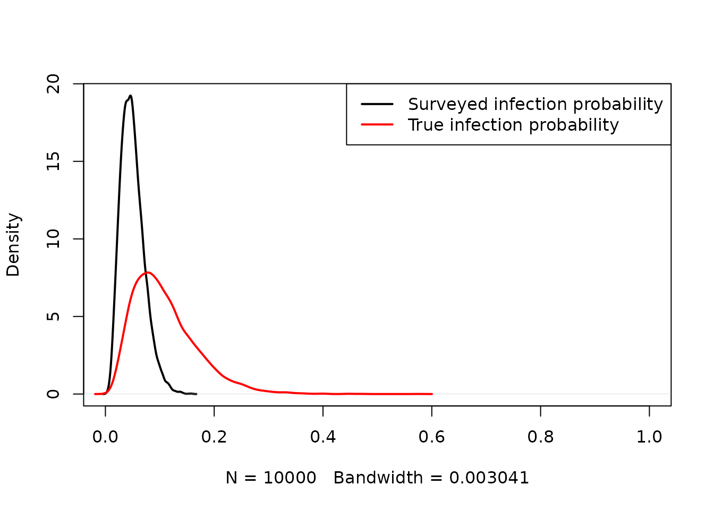
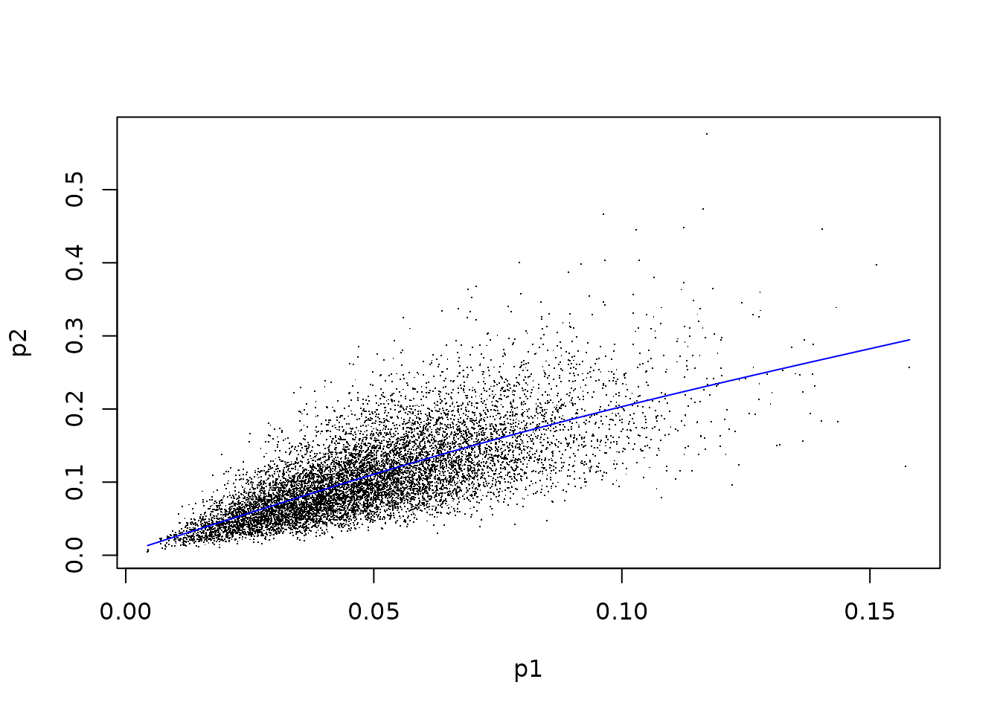

voi for Value of Information calculation: package overview
Christopher Jackson
2023-11-04
Source:vignettes/voi.Rmd
voi.RmdValue of Information methods are a decision-theoretic framework for estimating the expected value of getting more information of particular kinds.
They are used in mathematical and statistical models, where parameters of the models represent quantities that are uncertain, and uncertainty is described by probability distributions.
The following two papers give a thorough recent review of the theory of the methods, and details of how they are applied and interpreted, from the perspective of healthcare decision-making.
This document gives a simple overview of how the voi
package is used to calculate measures of Value of Information. A simple
example model is used, but the same methods work in more complex
models.
The example model is a model used for decision making, which has been the most common application of VoI, e.g. in health economic evaluations.
A later section describes the use of VoI methods for a model that is used for estimation of uncertain quantities, rather than for explicit decision-making. For more information about the theory behind this, see Jackson et al. 2019 and Jackson et al. 2021.
Simple example model
Suppose we are making a decision between two treatments. Treatment 1 has no costs or effects. Treatment 2 has a net benefit which describes its average costs and effects for a population. We choose Treatment 2 if its incremental net benefit, relative to treatment 1, is positive. The incremental net benefit in this simple case is identical to the net benefit of treatment 2, since the net benefit of treatment 1 is zero.
Suppose that the net benefit is simply defined as the difference between two uncertain parameters, \(y(p_1,p_2) = p_1 - p_2\), where \(p_1\) gives the effects, and \(p_2\) gives the costs. Our current uncertainty can be described by normal distributions \(p_1 \sim N(1,1)\) and \(p_2 \sim N(0,2)\).
To make a decision under parameter uncertainty, one option is preferred to another if the expectation of its net benefit, with respect to the uncertainty, is greater. In this case, we choose treatment 2, because the net benefit is distributed as \(N(1, \sqrt{1^2+2^2}) = N(1, \sqrt{5})\) which has an expectation of 1, whereas treatment 1 has a known net benefit of zero.
Most of the functions in the voi package work with a
random sample of model inputs and outputs, generated from
“uncertainty analysis”, also known as “probabilistic sensitivity
analysis” or “probabilistic analysis”. For the example model, these are
simple to generate, as follows.
Specifying model inputs
The inputs should be a data frame with one column per parameter and one row per random sample.
set.seed(1)
nsam <- 10000
inputs <- data.frame(p1 = rnorm(nsam, 1, 1),
p2 = rnorm(nsam, 0, 2))Specifying model outputs
The outputs can be supplied in either of two forms.
Net benefit form. A data frame with one column per treatment, and one row per random sample, giving the net benefit of each treatment. In this example, the net benefit of treatment 1 is zero.
outputs_nb <- data.frame(t1 = 0,
t2 = inputs$p1 - inputs$p2)Cost-effectiveness analysis form. This should be a list that includes the following three named elements (in any order)
"c": a data frame with one column per treatment and one row per random sample, containing sampled values for the expected costs of the treatment."e": a data frame with one column per treatment and one row per random sample, containing sampled values for the expected effects of the treatment."k": a vector of values giving alternative amounts that a decision-maker is willing to pay for one unit of effectiveness, so that the net (monetary) benefit is \(e \times k - c\).
In this simple example, the parameter \(p_1\) gives the effects, and \(p_2\) the costs of treatment 2, and the net
benefit \(y = p_1 - p_2\) defined in
outputs_nb corresponds to a willingness-to-pay of \(k=1\). The cost-effectiveness format allows
us to compare VoI between different willingness-to-pay values, e.g. 1, 2
and 3 say here.
outputs_cea <- list(
e = data.frame(t1 = 0, t2 = inputs$p1),
c = data.frame(t1 = 0, t2 = inputs$p2),
k = c(1, 2, 3)
)Note that objects returned by the bcea function in the
BCEA package
satisfy this “cost-effectiveness analysis” format.
Expected value of perfect information
The expected value of perfect information is the expected net benefit given perfect information minus the expected net benefit given current information.
Computation using random sampling
Given current information, we decided on treatment 2. In the example we know that the expected net benefit under current information is 1, the mean of the distribution of treatment 2’s net benefit.
Random sampling can be used to illustrate how to compute the expected net benefit given perfect information. Each sample of parameter values mimics a situation of decision-making given perfect information, where we know the parameters take these values. For each sample, we compare the corresponding treatment 2 net benefit to the threshold of zero, and prefer treatment 1 if the net benefit is negative, and treatment 2 if the net benefit is positive. The net benefit for each sample is the net benefit of the chosen treatment given the “known” sampled parameter values. The expected net benefit given perfect information is then computed as the average of this sample (
nb_perfect).
decision_current <- 2
nb_current <- 1
decision_perfect <- ifelse(outputs_nb$t2 < 0, 1, 2)
nb_perfect <- ifelse(decision_perfect == 1, 0, outputs_nb$t2)
(evpi1 <- mean(nb_perfect) - nb_current)## [1] 0.4778316In practice we would not usually know the exact expectation (under
the current uncertainty distribution) of the net benefit for any
treatment, so we must compute it as the mean of the random sample. In
this case, colMeans(outputs_nb) would give a vector of the
expected net benefit for each treatment. The maximum of these is the net
benefit of the decision we take under current information, which in this
case is 1.0018431. This would become closer to the exact value of 1, the
more random samples are drawn.
An alternative view of EVPI is in terms of opportunity loss, which is the net benefit of the better decision we should have made (if we had known the truth), minus the net benefit of the decision we did make. The opportunity loss can be computed at each sample as follows. The EVPI is the mean of the opportunity loss.
opp_loss <- nb_perfect - nb_current
mean(opp_loss)## [1] 0.4778316Using the voi package to calculate EVPI
The voi package contains a simple function
evpi to compute the EVPI using the above procedure. The
function automatically detects whether your outputs are in net benefit
or cost-effectiveness format.
## [1] 0.4759885
evpi(outputs_cea)## k evpi
## 1 1 0.4759885
## 2 2 0.4028003
## 3 3 0.4174207Note the result is slightly different from evpi1, since
it uses the sample-based estimate of 1.0018431 of the expected net
benefit under current information, rather than the known expectation of
1.
Analytic computation
In this simple example, the EVPI can also be calculated “by hand”, because the model just involves normal distributions. The probability that the decision under perfect information agrees with the decision under current information, in this case, is the probability that the true value of a \(N(1, \sqrt{5})\) is actually positive.
The mean of nb_perfect can then be calculated as the
expected net benefit given a correct decision, multiplied by the
probability of a correct decision. The former is the mean of the values
of outputs_nb$t2 which are positive, which is the mean of a
\(N(1,\sqrt{5})\) truncated below at
zero. The mean of the truncated normal distribution has a known
analytic form, represented in the following R function.
mean_truncnorm <- function(mu, sig, lower=-Inf, upper=Inf){
a <- (lower-mu)/sig
b <- (upper-mu)/sig
mu + sig * (dnorm(a) - dnorm(b)) / (pnorm(b) - pnorm(a))
}
enb_correct <- mean_truncnorm(1, sqrt(5), lower=0)
mean_nb_perfect <- enb_correct * prob_correct
(evpi_exact <- mean_nb_perfect - nb_current)## [1] 0.4798107This is the exact value of the EVPI in this example, which differs slightly from the estimate based on Monte Carlo simulation. Unfortunately most realistic decision-analytic models do not have such a nice form, and we must rely on Monte Carlo methods to calculate the expected value of information.
Expected value of partial perfect information
The expected value of partial perfect information (EVPPI) for a parameter \(\phi\) in a decision-analytic model is the expected value of learning the exact value of that parameter, while the other parameters remain uncertain. \(\phi\) can comprise a single scalar parameter, or multiple parameters. If \(\phi\) refers to multiple parameters then the EVPPI describes the expected value of learning all of these parameters, often referred to as the multiparameter EVPPI.
The EVPPI is defined as the expected net benefit given perfect knowledge of \(\phi\), minus the expected net benefit given current information.
The function evppi can be used to compute this.
There are a variety of alternative computational methods implemented
in this function. The default methods are based on nonparametric
regression, and come from Strong et
al. (2013). If there are four or fewer parameters, then a
generalized additive model is used (the default spline model in
gam from the mgcv package). With five or more,
then Gaussian process regression is used.
Invoking the evppi function.
To call evppi, supply a sample of outputs and inputs (in
the same form as defined above) in the first two arguments. The
parameter or parameters of interest (whose EVPPI is desired) is supplied
in the "pars" argument. This can be expressed in various
ways.
(a) As a vector. The joint EVPPI is computed for all parameters in this vector. If the vector has more than one element, then the function returns the expected value of perfect information on all of these parameters simultaneously (described as the “multiparameter” EVPPI by Strong et al.).
evppi(outputs_nb, inputs, pars="p1")## pars evppi
## 1 p1 0.08210074## pars evppi
## 1 p1,p2 0.4759885(b) As a list. A separate EVPPI is computed for each element of the list. In the second example below, this is the EVPPI of \(p_1\), followed by the multiparameter EVPPI of \((p_1,p_2)\). Note that the multiparameter EVPPI is the theoretically same as the EVPI if, as in this case, the vector includes all of the parameters in the model (though note the difference from EVPI estimates above due to the different computational method).
## pars evppi
## 1 p1 0.08210074
## 2 p2 0.39029827## pars evppi
## 1 p1 0.08210074
## 2 p1,p2 0.47598851The evppi function returns a data frame with columns
indicating the parameter (or parameters), and the corresponding EVPPI.
If the outputs are in cost-effectiveness analysis format, then a
separate column is returned indicating the willingness-to-pay.
## pars k evppi
## 1 p1 1 0.08210074
## 2 p1 2 0.17052564
## 3 p1 3 0.25895085
## 4 p1,p2 1 0.47598851
## 5 p1,p2 2 0.40280031
## 6 p1,p2 3 0.41742073Changing the default calculation method
The method can be changed by supplying the method
argument to evppi. Some methods have additional options to
tune them. For a full list of these options, see
help(evppi).
Gaussian process regression
(from Strong et
al. (2013)). The number of random samples to use in this computation
can be changed using the nsim argument, which can be useful
for this method as it can be prohibitive for large samples. Here the
sample of 10000 is reduced to 1000.
evppi(outputs_nb, inputs, pars="p1", method="gp", nsim=1000)## pars evppi
## 1 p1 0.08834038Multivariate adaptive regression splines
This is a variant of generalized additive models based on linear splines, which uses a package called earth.
evppi(outputs_nb, inputs, pars="p1", method="earth")## pars evppi
## 1 p1 0.08810086While the merits of this method for EVPPI computation have not been
systematically investigated, I have found this to be generally faster
than comparable mgcv spline models for similar levels of
accuracy and around 5 or fewer parameters.
INLA method
(from Heath et al., Baio et al. ). This needs the following extra packages to be installed, using the following commands.
install.packages('INLA', repos='https://inla.r-inla-download.org/R/stable')
install.packages('splancs')It is only applicable to calculating the multiparameter EVPPI for 2 or more parameters.
In this toy example it is overkill, since the two-parameter EVPPI is
simply the EVPI, and the default method needs an esoteric tweak
(pfc_struc) to work.
However it has been found to be more efficient than the Gaussian process method in many other situations. See Heath et al., Baio et al. for more details about implementing and tuning this method.
Bayesian additive regression trees (BART)
This is another general nonparametric regression procedure. It is designed for regression with lots of predictors, so it may be particularly efficient for calculating multiparameter EVPPI, as the following demonstration shows.
The voi package includes a (fictitious) example health
economic model based on a decision tree and Markov model: see the help
page voi::chemo_model. There are 14 uncertain parameters.
Outputs and inputs from probabilistic analysis are stored in the
datasets chemo_nb (net benefit for willingness-to-pay
£20000) and chemo_pars. The multiparameter EVPPI for all
fourteen of these parameters is by definition equal to the EVPI.
Using the BART estimation method, the EVPPI estimate for all 14
parameters is very close to the estimate of the EVPI, and the
computation is quick (about 16 seconds on my laptop. Call as
evppi(...,verbose=TRUE) to see the progress of the
estimation).
## pars
## 1 p_side_effects_t1,p_side_effects_t2,c_home_care,c_hospital,c_death,u_recovery,u_home_care,u_hospital,logor_side_effects,p_hospitalised_total,p_died,lambda_home,lambda_hosp,rate_longterm
## evppi
## 1 368.4953
evpi(chemo_nb)## [1] 368.6051The BART estimation is being performed using the bart()
function from the dbarts package, and
in this case the function’s default settings are used.
While the BART method has not been investigated systematically as a way of estimating EVPPI, these are promising results.
Tuning the generalized additive model method
The generalized additive model formula can be changed with the
gam_formula argument. This is supplied to the
gam function from the mgcv package. The
default formula uses a tensor product, and if there are more than four
parameters, then a basis dimension of 4 terms per parameter is
assumed.
A challenge of estimating EVPPI using GAMs is to define a GAM that is
sufficiently flexible to represent how the outputs depend on the inputs,
but can also be estimated in practice, given the complexity of the GAM
and the number of random samples available to fit it to.
## pars evppi
## 1 p1,p2 0.4759885Note that if there are spaces in the variable names in
inputs and pars, then for
gam_formula the spaces should be converted to underscores,
or else an "unexpected symbol" error will be returned from
gam.
A standard error for the EVPPI estimates from the GAM method,
resulting from uncertainty about the parameters of the GAM
approximation, can be obtained by calling evppi with
se=TRUE. This uses \(B\)
samples from the distribution of the GAM parameters, thus the standard
error can be estimated more accurately by increasing B.
evppi(outputs_nb, inputs, pars="p1", se=TRUE, B=100)## pars evppi se
## 1 p1 0.08210074 0.007093807Single-parameter methods
These are only applicable for computing the EVPPI for a single scalar parameter. They are supplied in the package for academic interest, but for single-parameter EVPPI we have found it to be sufficiently reliable to use the default GAM method, which requires less tuning than these methods.
The method of Strong and Oakley:
evppi(outputs_nb, inputs, pars="p1", n.blocks=20, method="so")## pars evppi
## 1 p1 0.07997543The method of Sadatsafavi et al.:
evppi(outputs_nb, inputs, pars="p1", method="sal")## pars evppi
## 1 p1 0.08151919Traditional Monte Carlo nested loop method
(see e.g. Brennan et al.)
This is generally too slow to provide reliable EVPPI estimates in realistic models, but is provided in this package for technical completeness.
This method is available in the function evppi_mc. It
requires the user to supply two functions; one to evaluate the
decision-analytic model, and one to generate parameter values.
Model evaluation function
This function evaluates the decision-analytic model for specific parameter values. This must have one argument for each parameter. The return value can be in either a “net benefit” form or a “costs and effects” form. The “net benefit” form is a vector giving the net benefit for each decision option.
model_fn_nb <- function(p1, p2){
c(0, p1 - p2)
}The “costs and effects” form is a matrix with two rows, and one
column for each decision option. The rows gives the effects and costs
respectively for each decision option. If they have names
"e" and "c" then these are assumed to identify
the effects and costs. Otherwise the first row is assumed to contain the
effects, and the second the costs.
Parameter simulation function
This function generates a random sample of \(n\) values from the current (joint) uncertainty distribution of the model parameters. This returns a data frame with \(n\) rows and one named column for each parameter.
par_fn <- function(n){
data.frame(p1 = rnorm(n, 1, 1),
p2 = rnorm(n, 0, 2))
}Invoking evppi_mc
These functions are then supplied as arguments to
evppi_mc, along with the number of samples to draw in the
inner and outer loops. 1000 inner samples and 100 outer samples give a
reasonable EVPPI estimate in this example, but many more samples may be
required for the result to converge to the EVPPI in more complex
models.
evppi_mc(model_fn_nb, par_fn, pars="p1", ninner=1000, nouter=100)Accounting for parameter correlation
We may want the EVPPI for a parameter which is correlated with
another parameter. To account for this correlation, par_fn
requires an extra argument or arguments to enable a sample to be drawn
from the appropriate conditional distribution. For example, the function
below specifies a bivariate normal distribution for \((p_1,p_2)\) where a correlation is induced
by defining \(E(p_2|p_1) = p_1\). To
draw a sample from the conditional distribution of \(p_2\) given \(p_1=2\), for example, call
par_fn_corr(1, p1=2)$p2.
If the argument p1 is not supplied, then the function
should return a sample from the joint distribution marginalised over
\(p_1\), as in this case where if we do
not supply p1 then a random p1 is drawn
followed by p2|p1.
A function of this form should then be passed to
evppi_mc if the parameters are correlated. This allows
evppi_mc to draw from the appropriate distribution in the
inner loop.
par_fn_corr <- function(n, p1=NULL){
p1_new <- if (is.null(p1)) rnorm(n, 1, 1) else p1
data.frame(p1 = p1_new,
p2 = rnorm(n, p1_new, 2))
}
evppi_mc(model_fn_nb, par_fn_corr, pars="p1", ninner=1000, nouter=100)Expected value of sample information
The expected value of sample information is the expected value of collecting a specific amount of data from a study designed to give information about some model parameter or parameters. It is defined as the expected net benefit given the study data, minus the expected net benefit with current information.
The function evsi can be used to calculate this. The
default method is based on nonparametric regression (from Strong et al.).
This requires the user to either
supply an R function to generate and summarise the study data, or
use one of the built-in study designs, and specify which of the model parameters are informed by this study.
To illustrate how to use evsi, suppose we want to
collect a sample of \(n\)
normally-distributed observations in order to get a better estimate of
the treatment 2 effectiveness \(p_1\).
Under current information, \(p_1\) is
distributed as \(N(1,1)\). After
collecting the sample, we would expect this distribution to become more
precise, hence reduce the chance of making a wrong decision. The EVSI
measures the expected improvement in net benefit from this sample.
Denote the study data as \(x_1,\ldots,x_n\), and suppose that they are distributed as \(x_i \sim N(p_1, \sigma)\). Hence the mean of the sample \(\bar{x} = \frac{1}{n}\sum_{i=1}^n x_i\) is a summary statistic containing the information provided by the data about \(p_1\).
The sample mean is distributed as \(\bar{x} \sim N(p_1, \sigma / \sqrt{n})\). Suppose for simplicity that the sampling variance \(\sigma\) of the data is known to equal 1.
To calculate the EVSI using this method, we generate a sample from the predictive distribution of this summary statistic under current information. This is achieved by generating a value of \(p_1\) from its current \(N(1,1)\) distribution, followed by a value of \(\bar{x}\) from \(N(p_1, \sigma / \sqrt{n})\).
Function to generate study data
The function should generate a sample from the predictive
distribution of the summary statistic, given a sample
inputs from the current uncertainty distribution of the
parameters.
inputs has the same format as described above, a data
frame with one row per sample and one column per parameter.
The function must return a data frame with one row per sample, and one column per parameter that is informed by the study data. Each data frame cell contains a summary statistic for that parameter from a simulated study.
The function datagen_normal below does this in a
vectorised way for the example. Each row of the returned data frame is
based on a different simulated \(p_1\)
taken from the first column of inputs, and contains a
summary statistic \(\bar{x}\) obtained
from a dataset generated conditionally on that value of \(p_1\).
The sample size is included as an argument n to the data
generation function. The names of the returned data frame can be
anything (xbar was used in this case to be
descriptive).
The evsi function can then be used to compute the EVSI
for a series of different sample sizes from this design. Note how the
EVSI converges to the EVPPI as the sample size increases.
datagen_normal <- function(inputs, n=100, sd=1){
data.frame(xbar = rnorm(nrow(inputs),
mean = inputs[,"p1"],
sd = sd / sqrt(n)))
}
set.seed(1)
evsi(outputs_nb, inputs, datagen_fn = datagen_normal, n=c(10,100,1000))## n evsi
## 1 10 0.07440250
## 2 100 0.08106261
## 3 1000 0.08189925Built-in study designs
The function datagen_normal is also included in the
voi package as a built-in study design. To invoke the
evsi function for a built-in study design, we have to
supply the name of the design (in this case "normal_known")
and the name of the parameter or parameters (corresponding to a column
of “inputs”) which is estimated by the study data.
## n evsi
## 1 100 0.07998166
## 2 1000 0.08197188## n k evsi
## 1 100 1 0.07976014
## 2 100 2 0.16666306
## 3 100 3 0.25356597
## 4 1000 1 0.08216435
## 5 1000 2 0.17052103
## 6 1000 3 0.25887874The known standard deviation defaults to 1, but can be changed,
e.g. to 2, by calling evsi with an aux_pars
argument, e.g. evsi(..., aux_pars=list(sd=2), ...).
Note that the results will be slightly different every time the
evsi function is invoked with the same arguments, due to
Monte Carlo error from generating the data (unless the seed is set with
the R function set_seed before each invocation).
Other built-in study designs include
"binary": A single sample of observations of a binary
outcome. Requires one parameter to be specified in pars,
that is, the probability of the outcome.
"trial_binary": A two-arm trial with a binary outcome.
Requires two parameters to be specified in pars: the
probability of the outcome in arm 1 and 2 respectively. The sample size
is the same in each arm, specifed in the n argument to
evsi, and the binomial outcomes are returned in the first
and second column respectively.
Importance sampling method
An alternative method comes from Menzies (2015) and
is based on importance sampling. This can be invoked as
evsi(..., method="is").
As well as a data generation function in the above format, this also requires the user to supply a likelihood function for the study data.
This is illustrated here for the simple normal example. The
likelihood function acts on one row of the data frame \(Y\) which is produced by the data
generation function, and returns a data frame with number of rows
matching the rows of inputs. Each row of the returned data
frame gives the sampling density for that row of \(Y\) given the corresponding parameter
values in inputs. The corresponding EVSI calculation then
involves building a large matrix of likelihoods for combinations of
simulated datasets and simulated parameters.
Any user-supplied likelihood function should consistently define the
same model for the data as the data generation function (the package
does not check this!), and any names of parameters and outputs should
match the names defined in inputs and the data generation
function.
This method is typically slower than the default nonparametric
regression method, so it may be worth setting nsim to a
value lower than the number of samples in inputs. Below
nsim=1000 is used so that only 1000 samples are used,
instead of the full 10000 samples contained in inputs.
likelihood_normal <- function(Y, inputs, n=100, sig=1){
mu <- inputs[,"p1"]
dnorm(Y[,"xbar"], mu, sig/sqrt(n))
}
evsi(outputs_nb, inputs, datagen_fn = datagen_normal, likelihood = likelihood_normal,
n=100, pars = "p1", method="is", nsim=1000)## n evsi
## 1 100 0.0864487Again, this study model is available as a built-in study design, so
instead of writing a user-defined likelihood and data generation
function, evsi can also be invoked with
study="normal_known", method="is".
evsi(outputs_nb, inputs, study = "normal_known", n=100, pars = "p1", method="is", nsim=1000)## n evsi
## 1 100 0.08619358Moment matching method
The momemt matching method from Heath et al. is
available as evsi(..., method="mm"). This includes the
extension of this method to efficiently estimate the EVSI for the same
design but with many different sample sizes (from Heath et al).
Roughly, this method works as follows (see Heath et al. for full details)
a small set of values \(\theta_q: q = 1,\ldots, Q\) are simulated for the decision model parameters \(\theta\) (typically \(Q<50\) is sufficient).
for each \(\theta_q\), future study data \(x_q|\theta_q\) are generated from the sampling distribution (as specified through
studyfor built-in study designs, ordatagen_fnfor custom designs).a sample is generated from the posterior distribution of \(\theta | x_q\).
the posterior variance \(v_q\) of the decision model net benefit \(NB(\theta)\) is deduced from this sample.
the average posterior variance over all samples \(q\) is compared to the prior variance, obtaining an estimate of the proportion of uncertainty explained by the proposed study. This is used as a “shrinkage” factor to modify the regression-based EVPPI computation to produce an estimate of the EVSI.
To use the moment matching method, evsi needs to know
some information that is not needed by the other EVSI calculation
functions. This includes:
a function
model_fnto evaluate the decision model, and a functionpar_fnto sample from the distribution of the model parameters under current information. These are supplied in the same form as in the EVPPI Monte Carlo method function,evppi_mc.-
information about how data \(x_q\) are analysed to produce the posterior.
For the built-in study designs, nothing extra is needed from the user here, as this information is built in.
For custom study designs specified using
datagen_fn, an extra function should be defined, and supplied as theanalysis_fnargument toevsi(..., method="mm"). This function should take three arguments:dataa data frame with names matching the output ofdatagen_fn,argsa list of constants for the analysis that the user might want to vary, e.g. prior parameters or options for posterior computation. The user supplies these inanalysis_args.parsnames of the parameters whose posterior is being sampled.
and return a data frame with each row containing a draw from the posterior distribution of the parameters named in the columns. If specialised Bayesian analysis software such as JAGS or Stan is needed, then this function should wrap around a complete call to this software. An example is given below.
analysis_args: a list of constants that the data analysis function needs to know. This is needed whether or not a built-in design is used. This would typically include parameters that define the prior distributions, and settings to control posterior computation (e.g. number of MCMC iterations). The specific components that are needed in this list depends on the study design, as specified byanalysis_fnorstudy.
Moment matching method: example using a built-in study design
This is the first EVSI example computation shown above, implemented using the moment matching method with a study sample size of 1000.
Recall the sampling distribution for the study data is a normal with
known variance, specified through study="normal_known". The
Bayesian inference procedure here is a simple conjugate normal analysis,
and is built in to the package, so we do not need to supply
analysis_fn.
However we do need to supply analysis_args. The
constants required by the conjugate normal analysis are the prior mean
and SD of the parameter p1, and the sampling SD of an
individual-level observation in the study, here \(\sigma=1\).
evsi(outputs_nb, inputs, study = "normal_known", n=10000, pars = "p1", method="mm", Q=30,
model_fn = model_fn_nb, par_fn = par_fn,
analysis_args = list(prior_mean=1, prior_sd=1, sampling_sd=1, niter=1000))## n evsi
## 1 10000 0.05094176The estimate of the EVSI is fairly close to the result from the regression method. The moment matching method also computes the regression-based estimate of the EVPPI, so this is returned alongside the EVSI estimate.
A lot of randomness is involved in the computation for this method,
thus there is some Monte Carlo error and it is not reproducible unless
the seed is set. This error can be controlled somewhat by changing \(Q\) (default 30) in the call to
evsi, the number of posterior samples (default 1000)
through the niter component of analysis_args,
and the size of outputs and inputs (as in most
VoI calculation methods).
Moment matching method: example using a custom study design
A more complex decision model is included with the voi
package, see help(chemo_model). In this model, the key
uncertain parameters describe the probabilities of an adverse outcome
(risk of side-effects), \(p_1\) and
\(p_2\), under the standard of care and
some novel treatment respectively. We want to design a study that
informs only the relative effect of the new treatment on the
risk of that outcome. The baseline risk \(p_1\) would be informed by some other
source. This might be because we believe that the decision population
has the same relative risk as the population in the designed study, but
the baseline risk may be different.
To calculate the EVSI for the proposed study, we define two R functions:
a function to simulate study data
a function defining a Bayesian model to analyse the potential study data.
Analysis function. First we show the function to
analyse the data. We parameterise the relative treatment effect as a log
odds ratio \(log(p_1/(1-p_1)) -
log(p_2/(1-p_2))\), supposing that there is previous information
about the likely size of this quantity that can be expressed as a
Normal\((\mu,\sigma^2)\) prior. The
baseline risk \(p_1\) is given a
Beta\((a_1,b_1)\) prior. These priors
match the current uncertainty distributions used in par_fn
and used to produce the parameter sample inputs supplied to
evsi.
Since this model does not have an analytic posterior distribution, we
use JAGS (via the rjags R package) to implement MCMC
sampling. It is not necessary to use JAGS however - the analysis
function may call any Bayesian modelling software.
The following R function encapsulates how the posterior is obtained from the data in this analysis.
analysis_fn <- function(data, args, pars){
dat <- list(y=c(data[,"y1"], data[,"y2"]))
design <- list(n = rep(args$n, 2))
priors <- list(a1=53, b1=60, mu=log(0.54), sigma=0.3)
jagsdat <- c(dat, design, priors)
or_jagsmod <- "
model {
y[1] ~ dbinom(p[1], n[1])
y[2] ~ dbinom(p[2], n[2])
p[1] <- p1
p[2] <- odds[2] / (1 + odds[2])
p1 ~ dbeta(a1, b1)
odds[1] <- p[1] / (1 - p[1])
odds[2] <- odds[1] * exp(logor)
logor ~ dnorm(mu, 1/sigma^2)
}
"
or.jag <- rjags::jags.model(textConnection(or_jagsmod),
data=jagsdat, inits=list(logor=0, p1=0.5), quiet = TRUE)
update(or.jag, 100, progress.bar="none")
sam <- rjags::coda.samples(or.jag, c("logor"), 500, progress.bar="none")
data.frame(logor_side_effects = as.numeric(sam[[1]][,"logor"]))
}A full understanding of JAGS model specification and sampling syntax
is beyond the scope of this vignette - we just explain what the
voi package is expecting. The inputs and outputs of
analysis_fn take the following form.
The return value is a data frame with a sample from the posterior of the parameters “learnt” from the study to inform the decision model. There should be one column per parameter learnt. Here we will only be using the information gained about
logor_side_effects, so there is only column. The names of the data frame (herelogor_side_effects) should match the names of arguments to the decision model function supplied as themodel_fnargument toevsi(here this function ischemo_model_lor_nb).-
The
datainput argument is a data frame with the outcome data from the study to be analysed. In this example, the study is a trial with two arms, and the study results are"y1"and"y2", the number of people experiencing the outcome in each arm. One row of data is sufficient here, but in other cases (e.g. with individual-level data) we might need multiple rows to define the study data.The names (
"y1"and"y2"here) should match the names of the data frame returned by the function to simulate the study data (datagen_fnbelow). -
The
argsinput argument is a list of constants that are needed in the analysis. The sample size of the proposed study, supplied as thenargument toevsi()is automatically added to this list.In this example,
nis the the size of each trial arm, and is available to the analysis code asargs$n. The sample size could also have been hard-coded into the analysis code, but supplying it throughargsis advisable as it allows the EVSI calculation to be defined transparently in the call toevsi(), and allows multiple calculations to be easily done for different sample sizes by supplying a vector as thenargument toevsi().Any other constants can be supplied through the
analysis_argsargument toevsi(). This might be used for constants that define prior distributions. In this example, these are instead hard-coded insideanalysis_fn. The
parsargument is not used in this example, but this is a more general way of setting the names of the returned data frame. The names supplied in theparsargument to theevsi()function will be automatically passed to this argument, so they can be used in naming the returned data frame. We might do this if we wanted to write a generic function to fit a particular Bayesian model, that we could use in different decision models or EVSI calculations. Here we simply hard-coded the names aslogor_side_effectsfor clarity.
Data generation function As in previous examples,
this takes an input data frame inputs with parameter values
sampled from the current uncertainty distribution, and outputs a data
frame with a corresponding sample from the predictive distribution of
the data. An additional argument n defines the sample size
of the study. Note in this example how inputs is
parameterised in terms of a baseline risk and a log odds ratio, and we
combine these to obtain the absolute risk in group 2.
datagen_fn <- function(inputs, n=100){
p1 <- inputs[,"p_side_effects_t1"]
logor <- inputs[,"logor_side_effects"]
odds1 <- p1 / (1 - p1)
odds2 <- odds1 * exp(logor)
p2 <- odds2 / (1 + odds2)
nsim <- nrow(inputs)
data.frame(y1 = rbinom(nsim, n, p1),
y2 = rbinom(nsim, n, p2))
}Finally evsi is called to perform the EVSI calculation
using the moment matching method.
ev <- evsi(outputs=chemo_nb, inputs=chemo_pars,
method="mm",
pars="logor_side_effects",
pars_datagen = c("p_side_effects_t1", "logor_side_effects"),
datagen_fn = datagen_fn, analysis_fn = analysis_fn,
n = 100, Q = 10,
model_fn = chemo_model_lor_nb, par_fn = chemo_pars_fn)One aspect of the syntax of the evsi call is new for
this example. pars_datagen identifies which parameters
(columns of inputs) are required to generate data from the
proposed study, and pars identifies which parameters are
learned from the study. These are different in this example. We
need to know the baseline risk "p_side_effects_t1" to be
able to generate study data, but we then choose to ignore the
data that the study provides about this parameter when measuring the
value of the study.
(In theory, these names need not be supplied to evsi if
they are hard-coded into the analysis and data-generating functions, but
it is safer in general to supply them, as they are required when using
built-in study designs, and it allows the analysis and data-generating
functions to be written in an abstract manner that can be re-used for
different analyses).
Value of Information in models for estimation
Suppose that the aim of the analysis is to get a precise estimate of a quantity, rather than to make an explicit decision between policies. VoI methodology can still be used to determine which uncertain parameters the estimate is most sensitive to (EVPPI) or the improvements in precision expected from new data (EVSI). The expected value of information is the expected reduction in variance of the quantity of interest given the further information.
We illustrate with an example. Suppose we want to estimate the prevalence of an infection. There are two sources of information. We have survey data which we think is biased, so that the true infection rate is higher than the rate of infection observed in the survey. We then have an expert judgement about the extent of bias in the data, and uncertainty associated with this.
Firstly, suppose the survey observed 100 people and 5 of them were infected. Using a vague Beta(0,0) prior (flat on the logit scale), the posterior distribution of the survey infection rate \(p_1\) is a Beta(5,95). We draw a random sample from this.
p1 <- rbeta(10000, 5, 95)Secondly, we guess that the true risk of being infected is twice the risk in the survey population, but we are uncertain about this relative risk. We might approximate our belief by placing a normal prior distribution on the log odds ratio \(\beta\), with a mean designed to reflect the doubled relative risk, and a variance that is high but concentrates the relative risk on positive values. Hence the true infection probability \(p_2\) is a function of the two parameters \(p_1\) and \(\beta\):
\[p_2 = expit(logit(p_1) + \beta)\].
We draw random samples from the current belief distributions of \(\beta\) and \(p_2\), and then graphically compare the distributions of the infection probability \(p_1\) in the survey data (black) and the true infection probability \(p_2\) (red).
beta <- rnorm(10000, 0.8, 0.4)
p2 <- plogis(qlogis(p1) + beta)
plot(density(p1), lwd=2, xlim=c(0,1), main="")
lines(density(p2), col="red", lwd=2)
legend("topright", col=c("black","red"), lwd=c(2,2),
legend=c("Surveyed infection probability", "True infection probability"))
The model output quantity is \(p_2\), and the model inputs are \(p_1\) and \(\beta\). We now want to determine the expected value of further information. This is measured in terms of expected reductions in variance of \(p_2\). This has a decision-theoretic interpretation, with “loss” being measured by squared error of a parameter estimate compared to the true parameter value. See Jackson et al. 2019.
EVPI and EVPPI for estimation
The EVPI is trivially \(var(p_2)\), the variance under current information, which we can compute from the sample as
var(p2)## [1] 0.003436631A more interesting quantity is the EVPPI for a parameter. It describes the expected reduction in variance given perfect knowledge of a particular parameter. In this example, we compute the EVPPI for \(p_1\) and \(\beta\), respectively, defined as
\[EVPPI[p_1] = var(p_2) - E(var(p_2| p_1))\] \[EVPPI[\beta] = var(p_2) - E(var(p_2 | \beta))\]
These can be computed using nonparametric regression, as described in
Jackson et
al. 2019. This is implemented in the function evppivar
in the voi package.
inputs <- data.frame(p1, beta)
(evppi_beta <- evppivar(p2, inputs, par="beta"))## pars evppi
## 1 beta 0.001432078
(evppi_p1 <- evppivar(p2, inputs, par="p1"))## pars evppi
## 1 p1 0.001800679Hence a slightly greater improvement in variance is expected from knowing the true risk in the biased sample, compared to knowing the relative odds of infection.
These EVPPI values are easier to interpret if they are converted to the scale of a standard deviation. If we subtract the EVPPI from the original variance of \(p_2\) we get, for example \(E(var(p_2) | p_1)\). The square root of this is an estimate of what the standard deviation of \(p_2\) would be if we learnt \(p_1\) (note that is not exactly the expected SD remaining, since we cannot swap the order of the square root and expectation operators).
## [1] 0.05862279## [1] 0.04477224## [1] 0.04044691Hence we would expect to reduce the SD of \(p_2\) to around 2/3 of its original value by learning \(p_1\) or \(\beta\).
How regression-based EVPPI estimation works
EVPPI is estimated here by nonparametric regression of the
output on the input. Recall that the method of Strong et al. (2013)
was used in evppi for models with decisions. Jackson et
al. 2019 showed how this method applied in a wider class of
problems, including models for estimation.
To estimate the expected reduction in variance in \(p_2\), given knowledge of \(p_1\), the evppivar function
fits a regression model with p2 as the outcome, and
p1 as the single predictor. A generalized additive model
based on splines is fitted using the gam function from the
mgcv package.
plot(x=p1, y=p2, pch=".")
mod <- mgcv::gam(p2 ~ te(p1, bs="cr"))
p1fit <- fitted(mod)
lines(sort(p1), p1fit[order(p1)], col="blue")
Taking the variance of the residuals from this regression (observed minus fitted values) produces an estimate of \(E(var(p_2 | p_1 = x))\), intuitively, the expected variance given knowledge of \(p_1\), which, when subtracted from the variance of \(p_2\), gives the EVPPI.
## [1] 0.001801982This agrees (up to Monte Carlo error) with the value produced by
evppivar, which is obtained by a closely-related method, as
the variance of the fitted values from this regression. This is equal to
the total variance minus the variance of the residuals, through the “law
of total variance”:
\[var(Y) - E_{X}\left[var_{Y| X}(Y |X)\right] = var_{X} \left[E_{Y|X}(Y|X)\right]\]
var(p1fit)## [1] 0.001800679EVSI for estimation
Now suppose we planned to collect additional survey data on the prevalence of infection.
First suppose that we can collect more data on the biased population that was used to estimate \(p_1\). The EVSI can be computed to show the expected value of surveying \(n\) individuals, for different sample sizes \(n\).
This is achieved using the function evsivar in the
voi package, as follows.
As in
evppivar, samples from the prior distributions of the parameters are supplied in the data frameinputs.study="binary"indicates that the proposed study consists of a binary outcome observed fromnindividuals.pars="p1"indicates which input parameter is informed by the study, in other words, which parameter is assumed to generate the study data.
## n evsi
## 1 100 0.0009216481
## 2 1000 0.0016288014
## 3 10000 0.0017851702As the proposed sample sizes increase, the expected value of sample information informing \(p_1\) converges to the EVPPI, the expected value of perfect information about \(p_1\).
Alternatively, suppose we were able to collect information about the
unbiased population, whose infection prevalence is \(p_2\). That is, suppose we surveyed \(n\) individuals, each infected with
probability \(p_2\). In this case, we
can compute the EVSI by using evsivar with the model
inputs defined to equal the model outputs, as follows:
inputs_p2 = data.frame(p2 = p2)
evsivar(p2, inputs=inputs_p2, study = "binary", pars="p2", n=c(100, 1000, 10000))## n evsi
## 1 100 0.002718628
## 2 1000 0.003343779
## 3 10000 0.003427483The unbiased data is clearly more valuable than the biased data, with double the variance reductions from biased data of the same sample size. As the sample size increases, the value converges to the EVPI, hence (in the asymptote) we will eliminate all uncertainty about our quantity of interest \(p_2\).
Expected net benefit of sampling
The voi package includes a function enbs()
to calculate the expected net benefit of sampling for a simple proposed
study, given estimates of EVSI, and some other information including
study costs and the size of the decision population.
This is described in a separate vignette, which also demonstrates how to plot the results of VoI analyses.